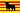

De: La Frikipedia, la enciclopedia extremadamente seria.
De: La Frikipedia, la enciclopedia extremadamente seria. De: La Frikipedia, la enciclopedia extremadamente seria.
| De la serie conflictos armados: | ||||
| Guerra Valenciano Catalana | ||||
| ||||
| Lugar y fecha | Països Catalans, 2014 | |||
|---|---|---|---|---|
| Bandos | Maragallistas | Carodistas | ||
| Fuerzas |  Cataluña leal a ZP Reino de Sajonia Alemanes de Köningsberg |
República de Rutenia República Socialista Soviética de Donetsk-Krivoy Rog | ||
| Comandantes | Pascual Maragall Artur Mas José Montilla (conseller en cap) Herzog von Warschau Günter Grass |
Piotr Ilich Chaikovski Fiodor Sergeyev | ||
| Armas | Mossos d'esquadra landwher Mala leche |
Otmans Bolcheviques separatistas | ||
| Bajas | Muertos: 2.867 Heridos: 34.123 Desaparecidos: 0,111 Muertos: 343 Heridos: 666,6666 Desaparecidos: 123 Muertos: 654 Heridos: 1.123 Desaparecidos: 333 Muertos: 2 Heridos: 23 Desaparecidos: 345.123 |
Muertos: 6.921 Heridos: 45.123 Desaparecidos: 2014. Muertos: 0 Heridos: 0 Desaparecidos: 0 Muertos: 311 Heridos: 1 Desaparecidos: 4400. Muertos: sin datos Heridos: sin datos Desaparecidos: sin datos. | ||
| Resultado | Barcelona cae en manos del ejército Maragallista | |||
La Guerra Valenciano Catalana fue un sanguinario conflicto militar librado por motivos dinásticos e ideológicos entre los dos bandos de la nobleza catalana, de un lado, la nobleza partidaria del virrey Pep Montilla de Barcelona, y de otro lado, los marxistas de Carod Rovira, antiguo filogermanista partidario de entrar en la Primera Guerra Mundial en la triple alianza, y ahora presidente del congreso del partido de Amigos de la Unión Soviética. La guerra se libró en suelo catalán y valenciano en el año 2014, tras la declaración de independencia de Cataluña proclamada por Carod Rovira en la reunión con los líderes sovieticos del Asia Occidental.
Las fuerzas leales a Pascual Maragall por el bando leal y Pepe Luís Carod Rovira por el bando rojo, que contaba con el apoyo directo de varias repúblicas soviéticas títeres de Lenin. Las tropas mandadas por Trotsky estaban bien entrenadas en los códigos del bushido, la disciplina militar rusa heredada de los zares y de los bárbaros hunos de Siberia.
La lucha fue especialmente cruenta en las batallas de Valencia, Omsk y Barcelona, donde se produjeron cargas de bayoneta, asaltos suicidas a trincheras y se usaron lanzallamas bajo la supervisión de oficiales franceses del IV Imperio Francés, enviados como asesores militares por Napoleón IV, que buscaba alianzas comerciales para cerrar a Prusia el negocio del cannabis con los puertos de Trípoli y Berbería, del mismo modo que intentaba hacerse con las rutas del Opio indio que era introducido en China por el gobierno inglés. A cambio, Cataluña recibiría Eslavonia, Rutenia y ciertas zonas fronterizas de Livonia.
En el XXIX Congreso del PCUS celebrado en Moscú en 2011, Josep Lluís Carod Rovira proclamó la República Soviética Katalana, pero la operación fue abortada por fuerzas especiales del Mossad. El gobierno otorgó a Pascual Maragall, presidente de Cataluña, el poder para reclutar y armar milicias contrarrevolucionarias que vigilaran a su ex-aliado Carod. Pero esta milicia se componía mayoritariamente de topos (en el sentido literal de la palabra).
Carod viajó en secreto a Alemania Oriental disfrazado de maquinista en un tren que transportaba cañones de montaña Krupp a las tropas prusianas que combatían en la tercera batalla de Warclaw, consiguiendo Carod burlar la vigilancia fronteriza francesa. El objetivo del viaje era reunirse con el káiser para sacarle alguna pequeña promesa para secundar su rebelión, pero no consiguió llegar hasta Alemania porque fue sorprendido por agentes del Mossad en un viejo Pub irlandés de Sarre. Carod se enfrentó a ellos con su pistola, pero fue capturado y llevado en secreto a la U.R.S.S. Allí, encerrado en un sótano junto a las reliquias de la madre patria rusa (la calavera del zar Nicolás, la metralleta PPSH que se usó para matarlo y un bocadillo de sardinas que perteneció a Karl Marx), se enteró por boca de un guardia rojo que el KGB la iba a reclutar para que liderara la Gran Armada Soviética que iba a conquistar Cataluña.
En los astilleros de Odessa y Sevastopol, Lenin estaba aglutinando una poderosa flota de Acorazados Potemkin y submarinos nucleares para transportar al ejército rojo a Cataluña. Pero Carod, hábil diplomático, le convenció de que en vez de enviar a los rusos enviara a otros soldados de repúblicas soviéticas con nombres atemorizantes, como la República Socialista Soviética de Donetsk-Krivoy Rog, cuyos paisanos estaban deseosos de pintar algo en la historia. Lenin accedió a cambio de Andorra.
En Cataluña, el arquitecto militar de Luís XIV de Pascual Maragall para sembrar la costa catalana de búnkers, puestos de morteros y otras ideas que había sacado del visionado de varias películas bélicas. Artur Mas adquirió al gobierno alemán las cifras de 653 lanzallamas, 3.836 fusiles máuser, 45 cañones Gran Berta y 1 bomba H (por si las cosas se ponían feas). En los cuarteles paramilitares carotistas, su líder supremo emitió un mensaje para todos los militantes: "Salgan a las calles a las 12:23:22 h. del día 12".
A la hora señalada más 23 minutos, comenzaron las hostilidades. Los soldados carotistas invadieron las calles de Pascual Maragall cogió un cabreo monumental y ordenó reconquistar la ciudad. Pero hicieron aparición los acorazados soviéticos, que desembarcaron 654.732 soldados rojos, hunos, tártaros y cosacos. Se cavan trincheras en torno a Barcelona y se cantan Els Segadors. Varios fokkers atacan a los rojos pero son rechazados por gaviotas comunes. A las 17:25 h. deserta un batallón entero de voluntarios vietnamitas.
El siguiente día, llegan procedentes de Dresde y alrededores 50.000 mercenarios alemanes armados con bastones de cuchillas. Trotsky toma el castillo de Montjuic y ordena izar la bandera soviética en él. Los transatlánticos requisados a la marina turca en 1909 desembarcan a muchos más soldados, entre los que se encuentran vendedores de alfombras y bashi-bazuks sedientos de sangre. El general prusiano Erich von Falkenhayn, gran amigo de Maragall ataca Barcelona con lanzallamas y gas mostaza, respondiendo los comunistas con gas ketchup. No se producen cambios importantes, pero Carod Rovira se enemista con Trotsky debido a que pretende cambiar la Generalitat por el Soviet de Barcelona. Se produce un duelo entre ambos. Carod con sable, Trotsky con un revólver Nagant M1895. Ganó Trotsky, que perdonó a Carod obligándole a comandar un ataque de ruskis con armas uno sí y otro no.
Dicho ataque tuvo lugar en la cota 346, un lugar triste que se animó rápidamente. Las tropas Maragallistas defendieron la cota del ataque ruso. Los lanzallamas y los tanques prestados por el káiser ayudaron a frenar a Carod, que fue degradado al rango de General por el fracaso. Lenin entre tanto enviaba caballería polaca por mar para atacar Valencia por sorpresa. En Barcelona, se sucedían lanzamientos de tomate a las residencias maragallistas. Los 6.722 prisioneros tomados fueron embarcados en el Potemkin para trabajar cortando leña en Siberia. ZP estaba a la espera de intervenir. Por su parte, el Imperio francés de Napoleón IV se posicionó a favor de Maragall enviándole 3.000 cajas de granadas a bordo del HMS Victory. Un submarino rojo, el Octubre Rojo, lo interceptó y le lanzó un torpedo. Se hundió el barco, provocando así la entrada de Gabachia en el conflicto, de proporciones mundiales.
Con una flotilla de 50 acorazados, 100 cruceros, 78 fragatas, 23 zodiacs, 8 galeras y 3 brulotes pesados, el almirante Bulganin lanzó un asalto anfibio sobre Valencia, la ciudad de las luces, centro cultural del Renacentismo. El ataque fue inseperado y provoco la entrada de Valencia en el conflicto del lado de la potencias centrales (Cataluña y sus aliados). Los valencianos se valieron de ladrillos para echar a los bolcheviques, peor estos tenían osos y cosacos. La estelar aparición del palleter, que cobró vida como por arte de magia, convenció a los malos de que allí lo tenían mal y pusieron tierra de por medio, escapando a La Mancha, donde la guardia civil los arrestó y los canjeó por prisioneros rumanos. Adolf Hitler y el temido general prusiano Erich Lundendorf (cuyo fracaso electoral con los nazis fue peor que el de Rajoy) reclamaron las testas de los rojos, pero sólo obtuvieron la del general Bulganin, metida dentro de una lata de foie grás de oca. Los resultados de esta cagadilla soviética sólo son comparables a Stalingrado, por eso Stalin decidió ocultar la verdad en un cassete usado que tenía Lenin en sobre su mesita de noche. Mala pata, pronto se firmaría un pacto germano-soviético.

Tras una larga semana de combates, Pascual Maragall y Carod Rovira acordaron celebrar el resultado de la guerra en un duelo entre 100 caballeros de cada bando. El combate tendría lugar en suelo neutral del Inframundo. Sucedió que no acudió nadie y cada uno consideró que había ganado, por lo que fue la entrada de Alemania en la guerra lo comenzó a decantar la victoria hacia el bando rebelde. Los nazis suministraron 250 AT-AT a los soldados carotistas, consiguiendo estos tomar Lérida, cuartel general de los Maragallistas. Poco después, Francia invadió Gerona aplastando toda la resisténcia. Maragall se vio obligado a hacer uso del teléfono rojo para llamar a Moscú y pedir ayuda a Putin, que acababa de destruir la URSS con la ayuda de su amigo Yeltsin y el tito Gorbachov. Evidentemente, cuando las primeras 1.235 cabezas nucleares llovieron sobre Berlín y otras aldeas pequeñas alemanas, los nazis riendieron armas en el Kremlin y fueron obligados a cavar en las minas de oro de Siberia bajo la supervisión de Gimli, primo de Putin.
Maragall ordenó un ataque de 3.000 fokkers y un tren de mercancías de Cercanías sobre Barcelona para tomar la ciudad, cosa que se consiguió. Carod huía él sólo nadando hacia su castillo del mal en L'Alguer, mientras acorazados de la marina lo perseguían. Fue rescatado por el Queen Mary II, donde varios espías de la TIA lo arrestaron y encarcelaron en la bodega. Después, fue puesto bajo custodia de Gimli en la mina de cobalto de las entrañas del infierno, donde los spetsnaz se valían del AK-47 para matar diablillos y otras bestias.
| | |
|---|---|
|
Autor(es):